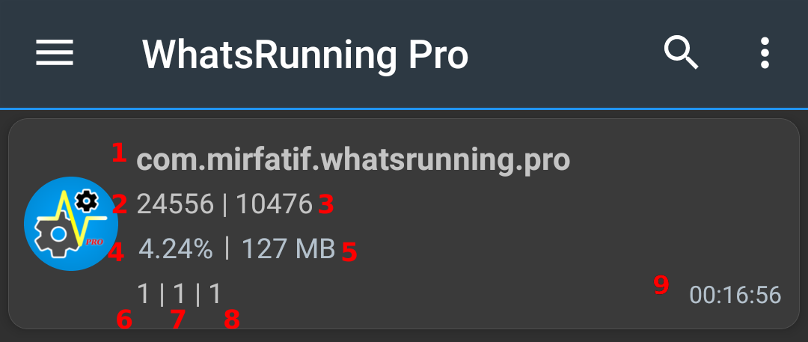
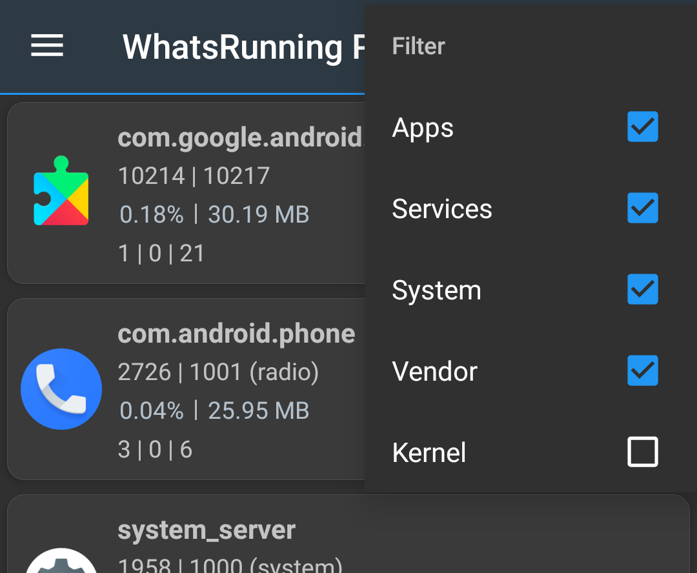
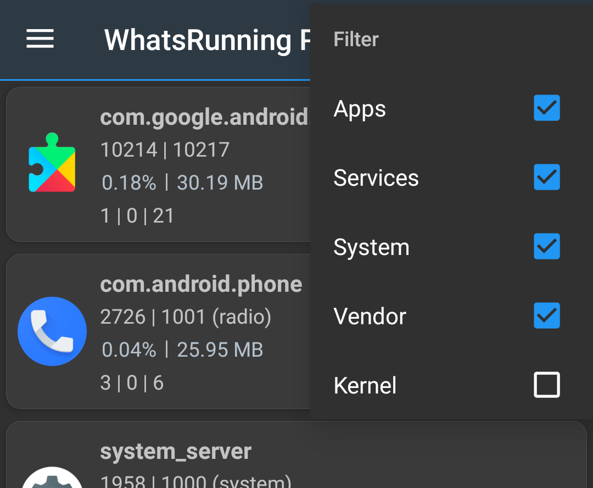
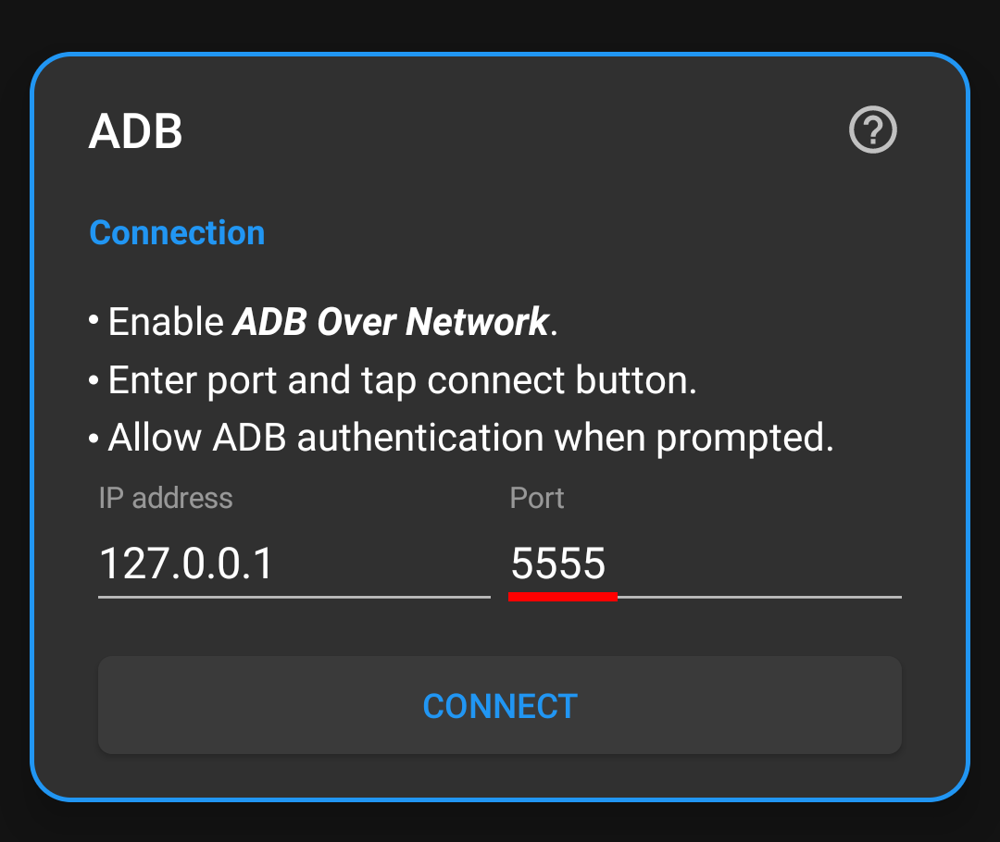
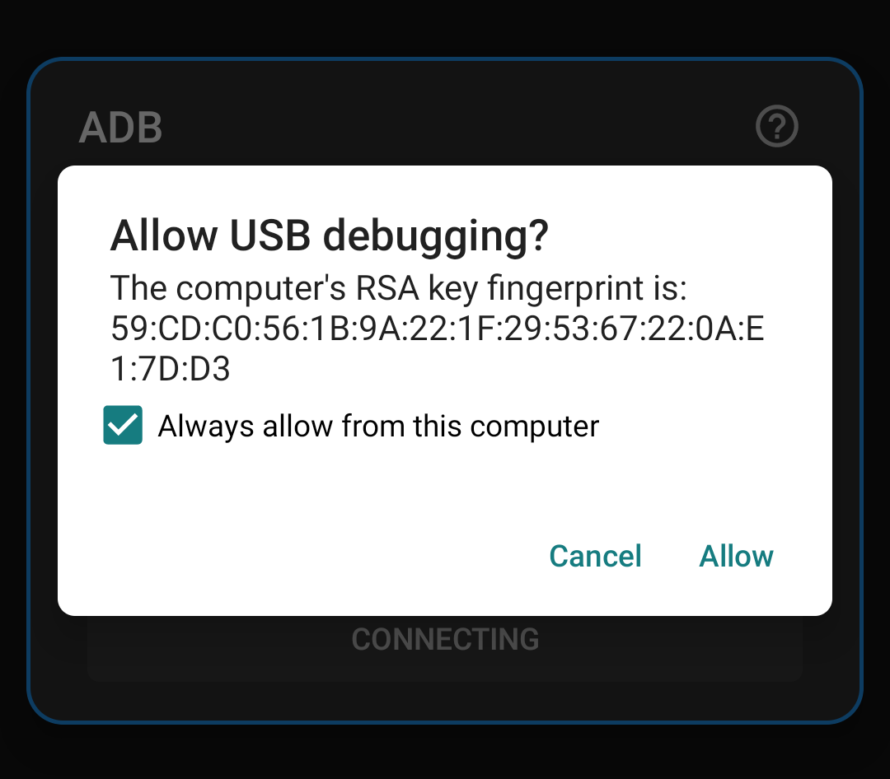
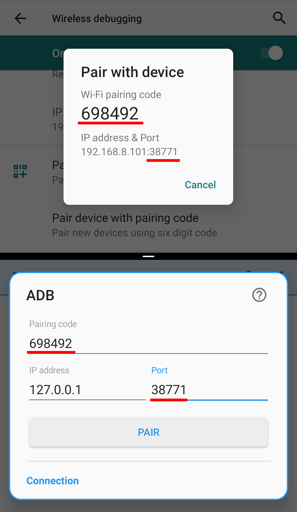

WhatsRunning
Contents
What does WhatsRunning do?
WhatsRunning shows you what's running on your device, which includes:
-
Processes
Almost everything about native processes:
- PPID, PID, UID, GID, groups, child count, thread count
- SELinux context, Linux capabilities, CGroups
- CPU usage, RAM usage, SWAP usage
- CPU priority, I/O priority, OOM kill score
- Commandline, executable path, age, I/O (storage) usage
-
Android apps
Details about framework, system and user apps:
- App name, package name, importance, last active time
- Tasks (activities) names, running status, last active time
- App services names, types, running status, number of clients, start time, last active time
- Init and framework services, if applicable
-
Memory usage
- Total, free and sparable RAM
- RAM used by active apps, cached apps, non-app processes, kernel and ZRAM
- Total Swap, usage by apps and non-app processes
These details are definitely going to clear many of your confusions you might have since ever about Android's memory management e.g.
- Why your RAM is always full, even when you are not using many apps?
- Which apps' processes are not killed even when you are not using them?
- What are cached apps and which of them is on the hit list of Android operating system to be killed next?
-
System Services
Init (native) and framework (Java) services which keep on running forever
-
Scheduled Tasks
Alarms which may wakeup the device repeatedly, and scheduled jobs the apps run in background
-
Auto-starting apps
Apps which start on device boot
-
Wake Locks (upcoming)
Also see Github README.
Process Details

- Process name (commandline)
- PID
- UID / GID
- CPU usage
- RAM / swap usage
- Android app packages count
- App tasks (activities) count
- App services count
- Process age
Filtering, Sorting and Search
You can filter out the processes and apps you are not interested in.
There's a long list if parameters you can apply to sort the process list.
And an even longer list of keywords you can use to search the specific things in the process list you are concerned about.
 

Process Watcher
Did you ever wonder:
-
Which apps are not sleeping when you are sleeping? And they keep on starting and dying, and doing their work without your knowledge? When do they start, which components they use, for how long they are running, how much resources they use, and when they die?
-
Or which app or process is misbehaving on your device, killed and started again and again, wasting your precious battery and other resources? How may times did it restart in the last 24 hours?
-
Or which process looks like an alien, a malware, a threat to your privacy?
Process Watcher is a single and simple answer to all of these questions. It keeps running in the background with your consent, watching processes continuously. A notification is persistently showing a brief summary of the processes life and death. You tap on the notification to see which processes have started and stopped since the watcher was started. Simple!

Please note that due to the limitations of common Android devices, Process Watcher is not a realtime Linux process tracker. So it can miss very short-lived processes. If you are interested in the technical details, please read this great article: The Difficulties of Tracking Running Processes on Linux.
Using WhatsRunning with ADB
Note:
ADB is not as powerful as root is. In our case, for instance, WhatsRunning takes more time to build the list of processes when it's running with ADB.
Additionally, on some OEM ROMs the ADB functionality might be crippled due to lacking permissions or other restrictions. You can check the current status of what ADB can do in About -> Privileges (menu item):

Unfortunately we cannot do anything about it. And therefore some features are available only on rooted devices.
The following instructions apply to near-AOSP ROMs. Customized ROMs might have different or missing settings.
So here we start how you can make WhatsRunning work with ADB.
If your device is not rooted, you need to turn Wireless ADB on before using WhatsRunning. Some devices have ADB over Network or Wireless Debugging setting available in Developer options:

If you don't have this setting on your device, you need to connect the device to a USB host like PC once after every reboot.
Unhide Developer options screen:
-
Go to Settings -> About and tap Build number five to seven times.
Developer options should appear directly under Settings or in Settings -> System at the bottom.
Enable wireless debugging:
-
Enable Android debugging in Developer options.
-
Connect the device to the PC with a USB cable.
-
On PC open a terminal window (or command prompt on Windows) and run:
adb tcpip 5555
You must have adb executable available on your PC to run the above command. If not, here's the download link.
Optional steps for verification:
-
Disconnect the USB cable from the device.
-
Connect your device and PC to a common Wi-Fi network.
-
Get the IP address of the device (usually in Wi-Fi settings or in Settings -> About), say it's 192.168.1.1.
-
On PC run:
adb connect 192.168.1.1
-
Run again:
adb shell id -u
It should print 2000 (or 0).
Connect WhatsRunning to ADB:
-
Run WhatsRunning app and check ADB Shell in drawer. Enter port 5555 and tap connect.

-
Allow USB Debugging if asked.

Leave the Android debugging enabled.
For more details see this.
Android 11+
On Android 11 and above, it's possible to turn on Wireless Debugging without connecting to a PC.
-
Connect your device to a Wi-Fi network.
-
Open WhatsRunning and Developer Options in Split-Screen mode. See instructions above how to unhide Developer Options.
-
Enable Wireless debugging and Disable ADB authorization timeout in Developer Options. The latter ensures that you don't have to repeat the next two steps (pairing) again and again.

-
Open Wireless debugging and tap on "Pair device with pairing code". Note the pairing code and port number.
-
In WhatsRunning check ADB Shell in drawer, enter both parameters in the shown fields, and tap pair.

-
After successful pairing now it's time to connect. Enter the new port number from Wireless debugging in the shown field and tap connect.

Now you can leave the Wireless debugging enabled. Or better disable it and leave the USB debugging enabled.
If you entirely turn off the debugging in Developer options, or after every reboot, you need to repeat the last step.
For more details see this.
FAQs
Why WhatsRunning requires root or ADB access?
Android won't allow a normal user app to read the process information of other apps, even not completely of its own.
That's why we run a separate process with high privileges to circumvent the restrictions.
By default, the background process (daemon) is run with ADB UID (2000) or (if rooted) System UID (1000). On rooted devices UID can be changed in Advanced Settings.
My device isn't rooted. How can I use WhatsRunning?
Use with ADB. Please do read the note at the start. There are some limitations; more on some devices.
Why WhatsRunning requires INTERNET permission?
INTERNET permission is required to make use of ADB over network. The only connections made outside the device are to check for updates (which you can disable in app settings) and to fetch help contents (this webpage).
Pro version also requires INTERNET permission for license verification.
How much privacy friendly WhatsRunning is?
We are not interested in you or your device at all. We do not spy on you. We do not collect your data in any way, not even the crash logs. We believe in our users being educated, well-informed, and in-charge of their privacy. WhatsRunning strengthens you to protect your privacy.
You may also want to see our Privacy Policy.
Downloads / Screenshots
Please visit Github README.
Please contact us via email or Telegram.